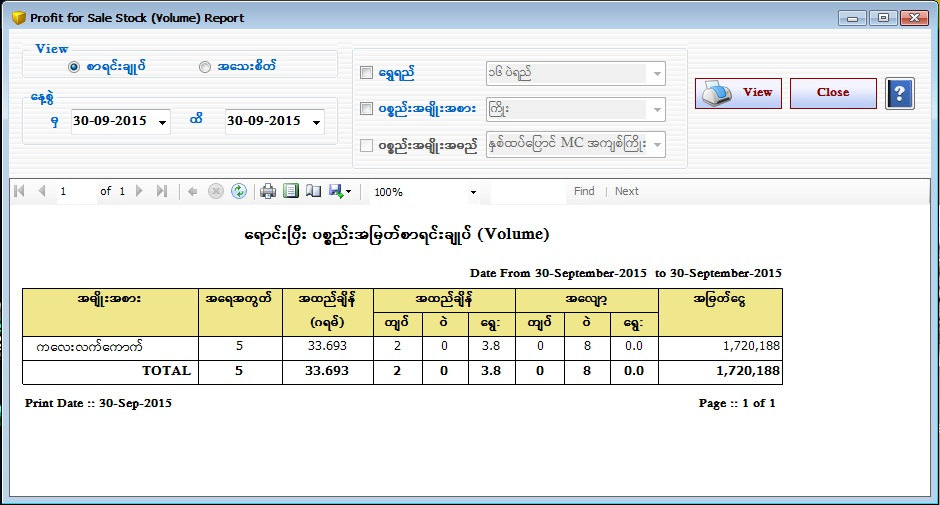

Profit Volume Stock Items Setup

- Reports အောက်ရှိ Profit Volume Stock Items Form ကိုဖွင့်ပါ။
- Profit Volume Stock Items Form သည် Volume အလိုက် Barcode တပ်ထားသောပစ္စည်းများ၏(ရောင်းချပြီး) အမြတ်စာရင်းကိုပြသော Form ဖြစ်သည်။ ၄င်းForm သည် Volume Barcode တစ်ခုတွင်ပါဝင်သော ပစ္စည်းများအားလုံးရောင်းချပြီးမှသာ အမြတ်စာရင်းအားတွက်ပေးမည်ဖြစ်သည်။
- ရွှေရည် အလိုက်ကြည့်ချင်ပါက ရွှေရည် ၏ check box ကို on ထားပေးပါ။ (သို့) ပစ္စည်းအမျိုးအစား အလိုက်ကြည့်ချင်လျှင် ပစ္စည်းအမျိုးအစား၏ check box ကို on ထားပေးပါ။ (သို့) နှစ်မျိုးလုံးကြည့်ချင်ပါက ရွှေရည် နှင့် ပစ္စည်းအမျိုးအစား နှစ်မျိုးလုံးကို on ထားပြီး Data များကိုပြန်လည်ကြည့်ရှုနိုင်ပါသည်။
- မိမိကြည့်ချင်သော နေ့စွဲ ကို ရွေးချယ်ပါ ။ ရွေးချယ်ထားသော နေ့စွဲအတွင်း ရှိ Volume အမြတ်စာရင်းကို ကြည့်ရှုနိုင်ပါသည်။
- စာရင်းချုပ်ကို on ထားပါက Volume ၏ ရောင်းပြီး အမြတ်စာရင်းချုပ်ကိုကြည့်ရှုနိုင်မည် ဖြစ်ပြီး အသေးစိတ် ကို on ထားပါက Volume ၏ ရောင်းပြီး အမြတ်စာရင်းများကို View Button နှိပ်၍ အသေးစိတ်ကြည့်ရှုနိုင်ပါမည်။
- Profit Volume Stock Items Form အား အသုံးပြုပြီးပါက Close Button ကိုနှိပ်၍ ပိတ်နိုင်ပါသည်။